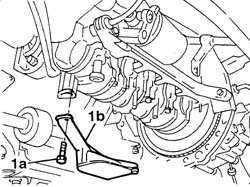
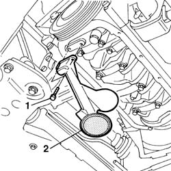
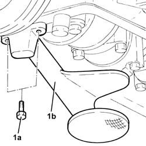

1084B28 ENGINE OIL INTAKE PUMP - R + R WITH CRANKCASE SUMP REMOVED
- Path
- Procedures > 10 ENGINE > 1084 ENGINE LUBRICATION > 1084B ENGINE OIL LUBRICATION CIRCUIT > 1084B28 ENGINE OIL INTAKE PUMP - R + R WITH CRANKCASE SUMP REMOVED
- Kind
- repair procedure (removal / refitting; the operation number is the code)
- Applies to
- engines: 1.2 8v, 1.9 JTD 8V, 1.9 DIESEL; all production periods
- Interactive page
- https://sloeber94.github.io/elrnDB-fDbl/en/#/223000135
Applies to: engines: 1.2 8v; all production periods
 Removing
Removing
 Refitting
Refitting1. Undo the bolts (1a) and remove the intake (1b).

Applies to: engines: 1.2 8v; all production periods
Refitting
RemovingFit the intake duct and secure it using the bolts.
Applies to: engines: 1.9 DIESEL; all production periods
Removing
Refitting1. Undo the bolts (1a) and remove the intake (1b).

Applies to: engines: 1.9 DIESEL; all production periods
Refitting
RemovingFit the intake duct and secure it using the bolts.
Applies to: engines: 1.9 JTD 8V; all production periods
Removing
Refitting1. Undo the bolts (1a) and remove the engine oil intake duct (1b).
Remove the gasket.

Applies to: engines: 1.9 JTD 8V; all production periods
Refitting
RemovingPosition the engine oil intake duct complete with gasket in its housing and secure it using the olts.